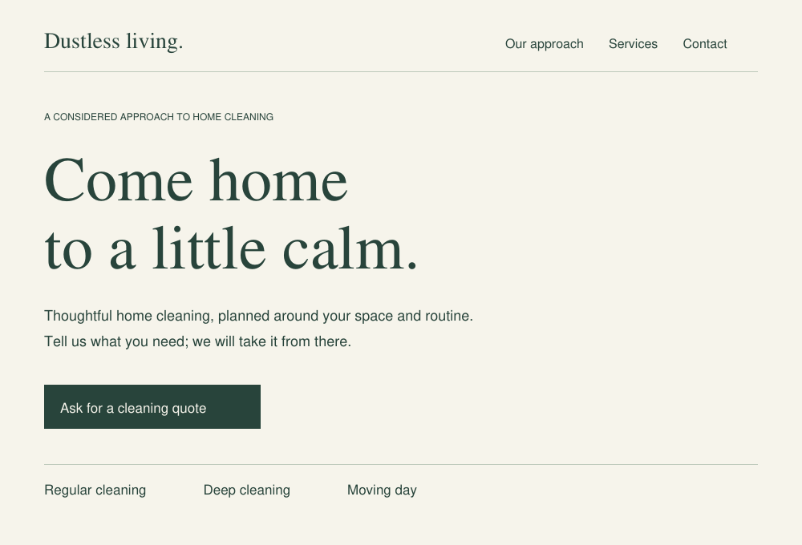

Selected concepts
Websites, reconsidered.
Explore a layout study for a fictional cleaning business.
A website, reconsidered
Small changes.
A clearer invitation.
An original cleaning-business concept. Move the divider to compare a crowded layout with a focused service page.
Design demonstration. Client results have not been measured.

